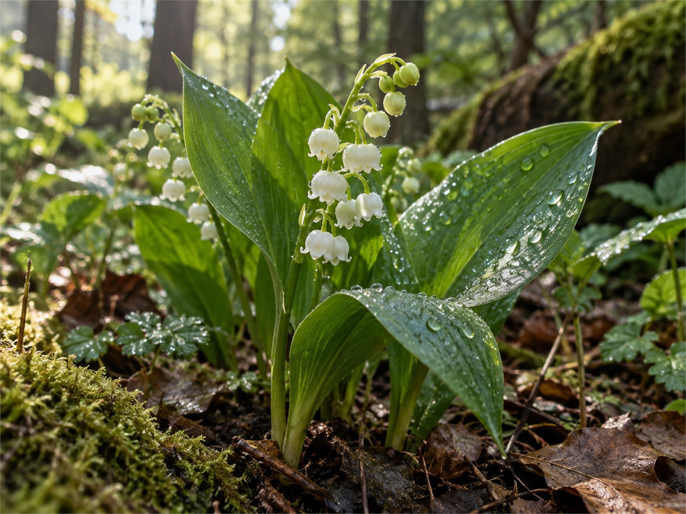
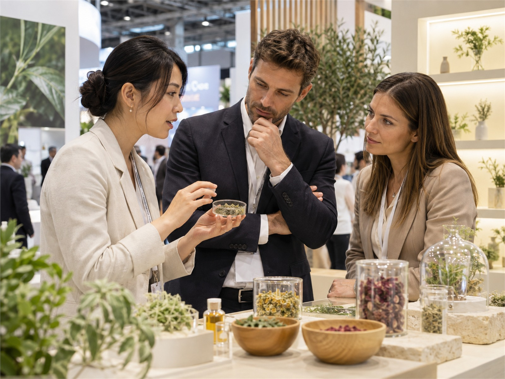

자연 속 생명의 이야기는 사람의 이야기로 이어집니다.
아름다움의 가치가 빛날 수 있도록 자연과 환경을 고민하며 자연과 사람이 함께 하는 세상을 꿈꿉니다.
“전 세계에 존재하는 천연원료를 찾아 가치를 더하는 기업,
NATURIVE 자연의 생명력이 깨어나는 최상의 순간, 우리는 아름다움을 완성합니다.”
자외선 차단제에 랩핑노화를 줄이는 원료.
고기능성 효능을 부여하는 NATURIVE 액티브를 소개합니다.


TSOC, UK
Warwick Science Park, Coventry, United Kingdom
NATURIVE, KOREA
경기도 성남시 분당구 판교로 242
ANS, USA
New York, NY, United States